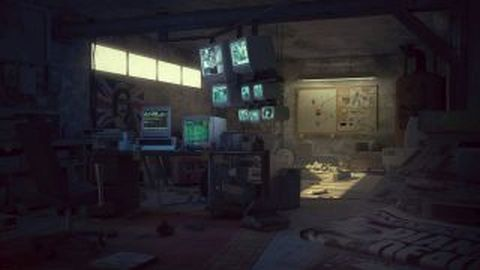

CYOQ Design:
1.What is your game theme?
You wake up in locked room, with small window, only desk computer and the cloack on the wall.
2.What is an image that sums up your game theme?

3.Who is the player?
Borys, 23 years old, who normally lived in Russia village.
4.What is the goal?
Escape the room, with smallest injuries for your body and mind.